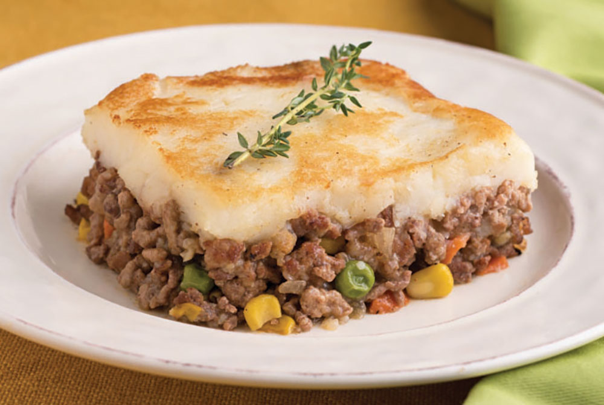

Home
Shepards Pie
This is a recipe for shepards pie.

Description
Shepherd's pie is a dish consisting of a layer of minced lamb (or mutton) cooked with vegetables, and topped with a layer of mashed potato, then baked. It is a popular dish in the United Kingdom and Ireland.
Ingredients
- 1 lb ground lamb
- 1 onion, chopped
- 2 carrots, chopped
- 2 potatoes, peeled and chopped
- 1 cup beef broth
- 2 Tbsp Worcestershire
- Salt and pepper to taste
Instructions
- Brown the lamb in a pan with the onion and carrots.
- Add the beef broth and Worcestershire sauce.
- Simmer for 20 minutes.
- Boil the potatoes until tender.
- Mash the potatoes and layer on top of the lamb mixture.
- Pour the mixture into a baking dish and bake at 375 degrees for 20 minutes.